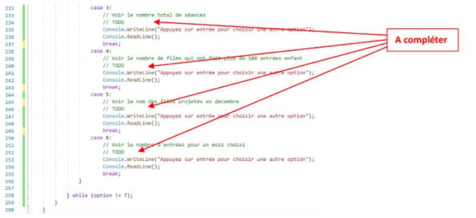

PortFolio
TP7 bloc1 - programmation (Mme Kintzler) : Evolution d'un programme donnant des indicateurs sur des entrées dans un cinéma
Compétences évaluées
Répondre aux incidents et aux demandes d’assistance et d’évolution
- Collecter, suivre et orienter des demandes
- Traiter des demandes concernant les applications
Contexte du projet
Le bloc 1 en première année nous amenés à faire évoluer le programme permettant au président du Cinédori d'obtenir différents indicateurs présentés lors de l'assemblée générale de l'association (nombre total des entrées sur l'année, le mois qui a fait le plus d'entrées, etc.). Les évolutions étaient nécessaires car le programme était réalisé par un stagiaire de BTS et quelques erreurs ont été faites.
Description
Le code à améliorer était fourni. Le programme devait permettre:
-de lire les caractéristiques des films qui sont enregistrées dans un fichier XML
-de saisir de nouvelles les caractéristiques des films qui seront ajoutées dans le fichier XML
-Afficher différents indicateurs (options 3 à 6 du menu ci-dessous)
Ce programme est nommé analyseFilm.
Un fichier XML est fourni, il va contenir des films avec leurs caractéristiques et va pouvoir être lu et compléter grâce au programme.
Les évolutions demandées du TP7 sont :
-Compléter le code de l'option 1 pour que l'affichage soit identique à la maquette ci-dessous :

-Réaliser les traitements correspondant aux options 3, 4, 5 et 6:

Il était possible de faire d'autres améliorations qui étaient :
-Pour chaque film, il est nécessaire de connaître sa catégorie ("documentaire", "fantastique",
"dessin animé", etc.).
-Faites le nécessaire pour que le fichier XML intègre cette nouvelle donnée et modifier le
programme pour qu'il permette la gestion de cette nouvelle information.
-Ajouter une nouvelle option dans le menu qui permet d'obtenir le nombre de dessins animés
passés en décembre 2019.
-Ajouter une nouvelle option dans le menu qui permet d'obtenir toutes les caractéristiques du
film dont l'utilisateur saisit le nom.
Synthèse
Ce projet a permis de découvrir Visual Studio 2019. J'ai apprécié voir l'application évoluée et devenir fonctionnelle.
Comptes-rendus